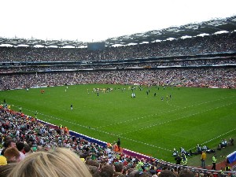
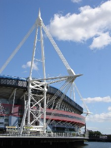
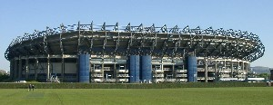
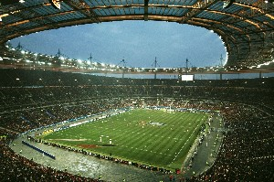
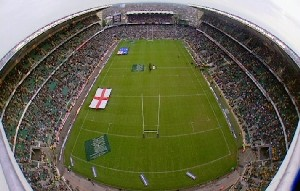

Links
This section provides links to the various sections of this website
Venues
This page provides a description of each of the venues for the Six Nations Championship.
Croke Park

Croke Park in Dublin, Ireland is the largest sports stadium in Ireland and the principal stadium and headquarters of the Gaelic Athletic Association (GAA), Ireland's biggest sporting organisation.
Millennium Stadium

The Millennium Stadium is the national stadium of Wales, located in the capital Cardiff. It is the home of the Wales national rugby union team and the Wales national football team but is also host to many other large scale events, such as Wales Rally Great Britain stage of the World Rally Championship, Speedway Grand Prix of Great Britain, boxing and many music concerts, including Madonna, The Rolling Stones and Tsunami Relief concert.
Murrayfield

Murrayfield Stadium (usually just known as Murrayfield) is a sports stadium located in the west end of Edinburgh, the capital of Scotland. At present its all-seater capacity is 67,800, making it the largest stadium in Scotland and one of the largest in the United Kingdom overall. The stadium is the home of the Scottish Rugby Union (SRU), and is primarily used as a venue for rugby union and hosts most of Scotland's home test matches, as well as the Edinburgh Sevens, the Scottish Hydro Electric Cup final, as well as Magners League and Heineken Cup matches. The stadium is considered an icon of Scottish rugby.
Stade de France

The Stade de France is the national stadium of France, situated in the Paris suburb of Saint-Denis. It has an all-seater capacity of 80,000 and is used for the French rugby union team during the Six Nations and other major internationals. The French football team also use the stadium for almost every home game, and it was there where they defeated Brazil 3-0 in the 1998 FIFA World Cup Final. Paris's main rugby club, Stade Francais, periodically use the stadium as a home ground for some major matches.
Twickenham

Twickenham Stadium (usually known as just Twickenham) is a stadium located in Twickenham, in the London Borough of Richmond upon Thames. It is the largest rugby union stadium in the United Kingdom and has recently been enlarged to seat 82,000. This makes it the second largest stadium in the UK after Wembley Stadium. The stadium is the home of the Rugby Football Union (RFU), and as such primarily a venue for rugby union and hosts England's home test matches, as well as the Middlesex Sevens, the Guinness Premiership final, as well as EDF Energy Cup and Heineken Cup matches. The stadium is considered an icon of English rugby.
Stadio Flaminio

The Stadio Flaminio is a stadium in Rome. It lies along the Via Flaminia, three kilometres northwest of the city centre, 300 metres away from the Parco di Villa Glori. It is now the home of Italy rugby union national team in its Six Nations tournament home matches. With a capacity of 30,000 (8,000 covered) it is the smallest of the Six Nations stadiums. It is no longer considered big enough for the Italian national team and there are continually reports that they will be moving to Genoa.